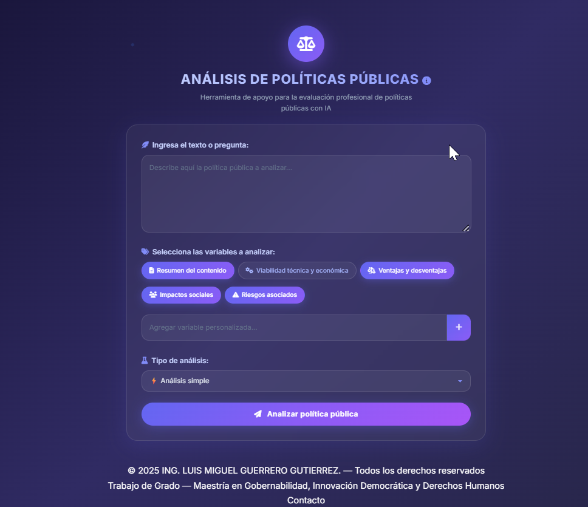

No temamos ser distintos. Temamos, más bien, no reconocer el poder que nace cuando nuestras diferencias trabajan juntas. Que nadie nos divida por lo que somos; que nos una lo que podemos construir juntos. Porque el futuro de Medellín no se construirá con uniformidad, sino con el valor de unir lo diverso. Y cuando las diferencias se convierten en propósito, un pueblo entero se levanta… y Medellín avanza
Tecnología, justicia social y derechos humanos al servicio de Medellín. Gobernanza inteligente con corazón liberal.
Luis Miguel Guerrero G.
Concejal · Partido Liberal
Ingeniero de Software con Especialización en Seguridad Informática, Magíster en Gobernanza, Innovación Democrática y Derechos Humanos, y Abogado en formación. Escritor y columnista en La Silla Vacía, donde analizo la intersección entre tecnología, política pública y derechos fundamentales.
Creador del primer prototipo de software en Colombia que utiliza Inteligencia Artificial para el análisis de políticas públicas, postulado como candidato a Trabajo Meritorio/Laureada en la Universidad Autónoma del Caribe.
¡SI MEDELLIN AVANZA,COLOMBIA AVANZA!
// ═══ Principios de gobernanza digital ═══
const transparencia = "Cada peso visible, cada decisión trazable";
const verdad = "Datos verificables, no promesas vacías";
const acceso = "Tecnología al alcance de cada ciudadano";
const dignidad = "La persona primero, el algoritmo después";
// ═══ Arquitectura de ciudad ═══
let medellin = { datosAbiertos, iaParaTodos, ciberseguridad, inclusion, ddhh };
function gobernarConVerdad(ciudad) {
return "La tecnología trabaja para la gente, no al revés.";
}
▸ gobernarConVerdad(medellin); // 🚀
La tecnologia al servicio de la dignidad humana, la justicia social y la verdad.
— Luis Miguel Guerrero Gutiérrez
Un sistema pionero que integra Inteligencia Artificial con simulación estadística Monte Carlo para evaluar cualitativa y cuantitativamente propuestas de política pública. Candidato a Trabajo Meritorio/Laureada — Universidad Autónoma del Caribe.

Sistema de Análisis de Políticas Públicas con IA & Monte Carlo
Aplicación web que combina Inteligencia Artificial con una fórmula matemática real de simulación Monte Carlo para ofrecer evaluaciones cualitativas y cuantitativas de políticas públicas. Diseñada en 2025 como Trabajo de Grado de Maestría.
Propuestas reales, medibles y ejecutables para transformar la gestión pública mediante tecnología, datos abiertos y participación ciudadana digital.
Decisiones basadas en datos, no en intuiciones
Que el ciudadano sea el verdadero veedor
Democracia directa desde el barrio
Tus datos son tuyos, no del Estado
Sesiones en vivo, votaciones nominales, alertas y calificación ciudadana a concejales.
Presupuesto participativo digital: prioriza proyectos y visualiza inversiones en tu barrio.
Denuncia y seguimiento a obras inconclusas, contratación irregular y problemáticas barriales.
Reporte de maltrato, censo de fauna callejera, adopciones y seguimiento veterinario.
Atención integral para habitantes de calle: geolocalización de servicios y seguimiento.
Registro, geolocalización y beneficios para vendedores informales: créditos y formalización.
Concejal de Medellín 2027
Creo en una política hecha con datos, transparencia y corazón. Si compartes esta visión, acompáñame a construir una Medellín donde la tecnología trabaje para la gente, no al revés.
Una Medellín con dignidad para todos
La tecnología es un medio, no un fin. El verdadero objetivo es una ciudad más justa, donde cada persona tenga acceso a derechos, oportunidades y dignidad.
Lucha contra el Maltrato Animal
Derechos de Habitantes de Calle
Estímulos para Vendedores Informales
Defensa de los Derechos Humanos
Educación Digital y Juventud
Medellín Verde y Sostenible